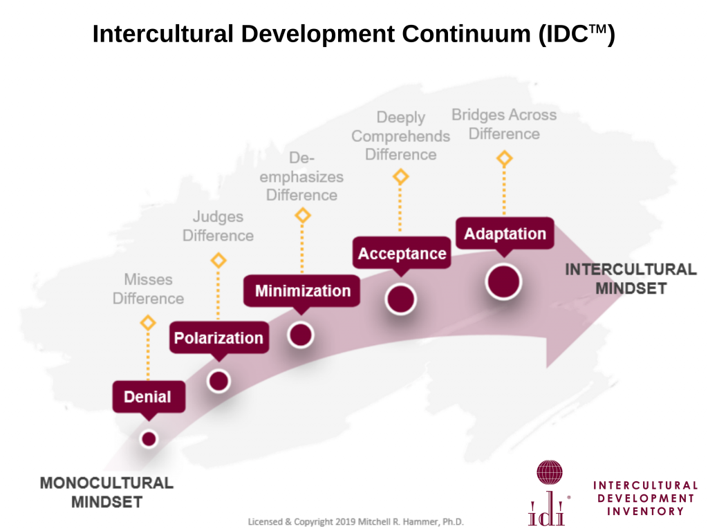

Intercultural Development Inventory
The Intercultural Development Inventory, usually just called the IDI, is a five-step metric for determining how far along you are in your cultural adjustment within a new cultural context. It's a really helpful tool for recognizing where you've been, understanding where you are now, and look ahead to where you should focus on progressing; I've found it immensely helpful, and I think anyone who interacts with other cultures, regularly or not, will find it very helpful.
Officially, your place on the inventory is determined through taking an online questionnaire, which isn't free; examining the stages and their descriptions, however, is still a valuable exercise. You may be at the very beginning, or you may find yourself hovering somewhere in the middle—there's no "right" place to start, but looking at all five as falling on a linear spectrum is the most useful way of understanding it.
Stage One: Denial
This stage misses the differences between two cultures completely. The "clueless tourist" stereotype often falls here; people in denial often don't realize how different another culture is or how inappropriate they might be coming across. In their minds, everyone should be just like them, and any encounters that point to it being otherwise leave them feeling confused and unsure of themselves.
Stage Two: Polarization
Polarization is the next step from Denial, but the two couldn't be more different. Entering into Polarization is to see that there is difference—difference everywhere! And it isn't *good* difference. People in Polarization see their new culture as one to be critically examined, and the problems stick out everywhere. Differences in the new culture may cause them to feel defensive, angry, or afraid; the new is something to be feared or critiqued.
There is another form of Polarization, called *Reverse Polarization*—in this form, the *old*, home culture is what causes a negative emotional reaction. People experiencing Reverse Polarization reserve their critical eye for the culture they're most familiar with, comparing it to the new cultures and finding it lacking or in need of fixing.
Regardless of which type of Polarization someone is experiencing, the mode of operation is the same—comparison and making judgements.
Stage Three: Minimization
In the Minimization stage, differences have been "moved past"—now, people in this stage begin to realize that *hey, we're not all that different*! Finding commonalities begins to make living in a new culture much easier; but people who are minimizing difference find that, similarly to the Denial phase, it is still difficult to engage in any part of the culture that is truly different. People in Minimization tend to operate under the general principle of "all people basically being the same"—a universal human nature is assumed in most interactions.
Stage Four: Acceptance
In Acceptance, a person begins to truly, deeply comprehend the differences between their home culture and the new one. They've learned not to be quick to cast judgements, and they've also learned that it's not always helpful to assume everyone is the same deep-down—because they're not! People who have made it to Acceptance see difference, see similarity, and have a deep understanding and appreciation of both cultures as a result.
Stage Five: Adaptation
Those in the Adaptation stage not only understand difference but live it. No matter which culture they are in, they are able to participate meaningfully and authentically—they're no longer "playing at" fitting into the new culture, and they've moved beyond just appreciating it to being able to adapt their values, actions, and contributions to be culturally appropriate and constructive.
There is always room to grow—a new culture may always be "new," relatively—but those in this stage have a deep understanding of where they fit into their environment and where they are heading.
